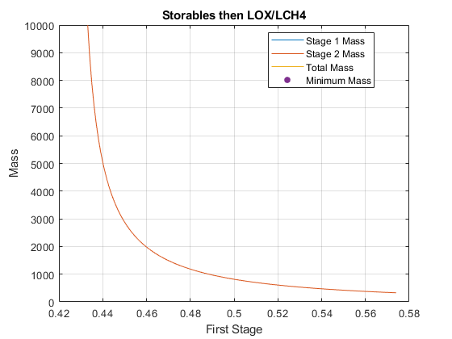

addpath('..')
d1 = 0.08 ;
d2 = 0.08 ;
isp = 285 ;
isp_comp = 285 ;
mpl = 26000 ;
x = 0:0.001:1 ;
first_stage = [] ;
second_stage = [] ;
tot_mass = [] ;
i = 1 ;
while i <= length(x)
[min1, min2, mpr1, mpr2, m0] = mass_function(isp, isp_comp, x(i), d1, d2);
first_stage(end+1) = min1 + mpr1 ;
second_stage(end+1) = min2 + mpr2 ;
tot_mass(end+1) = m0 ;
i = i + 1 ;
end
min_m0 = realmax ;
min_mox = NaN ;
i = 1 ;
while i <= length(x)
if first_stage(i) > 0 && second_stage(i) > 0 && tot_mass(i) < min_m0
min_m0 = tot_mass(i) ;
min_mox = x(i) ;
end
i = i + 1 ;
end
plot(x,first_stage/1000) ;
hold on ;
grid on ;
title("Storables then LOX/LCH4")
plot(x, second_stage/1000) ;
plot(x, tot_mass/1000) ;
plot(min_mox, min_m0/1000, '.', MarkerSize = 20) ;
legend('Stage 1 Mass','Stage 2 Mass','Total Mass','Minimum Mass','Location','best');
ylim([0, 1e4]) ;
xlabel("First Stage") ;
ylabel("Mass") ;
